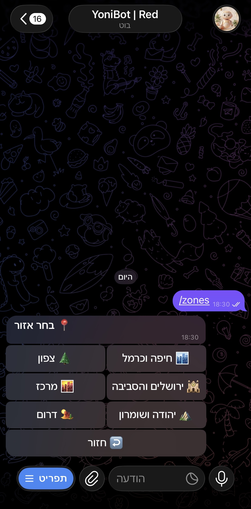
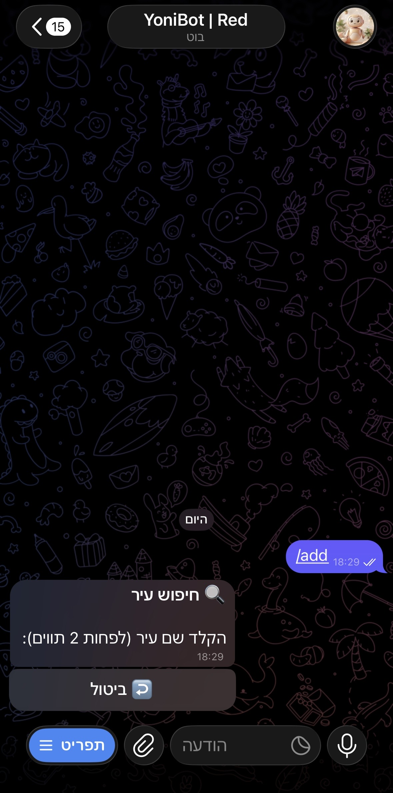
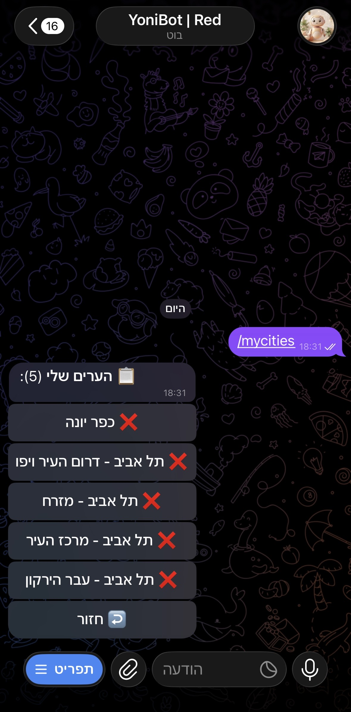

📸 תצוגה מקדימה

תפריט ראשי

בחירת אזור

חיפוש עיר

הערים שלי

הגדרות
התראות IDF בזמן אמת — ישירות לטלגרם, עם מפות ו-DM אישי
נתוני פיקוד העורף, מתעדכנים כל 2 שניות סביב השעון
זיהוי כפילויות, ניתוב לפי עיר ונושא, תורים חכמים
DM אישי לטלגרם, רק על הערים שבחרת, כולל מפה
ללא התקנה, ללא קוד
למתכנתים ו-DevOps
בחר מה מתאים לך — אפשר גם וגם
הכי מהיר — ללא התקנה, ללא שרת, ללא קוד. הערוץ רץ 24/7 ומכסה את כל ישראל.
שליטה מלאה — ערוץ פרטי, הגדרות משלך, הנתונים אצלך. wizard אינטראקטיבי מגדיר הכל בפקודה אחת.
npx @haoref-boti/pikud-haoref-bot
תפריט ראשי

בחירת אזור

חיפוש עיר

הערים שלי
הגדרות
קבל התראות ישירות לטלגרם — או הרץ instance פרטי משלך